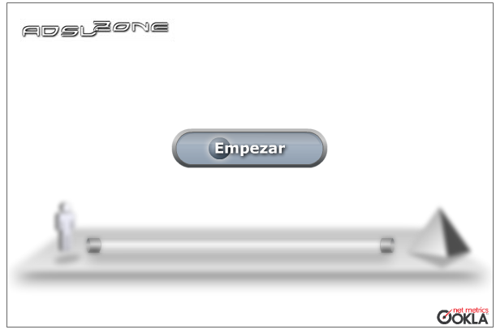
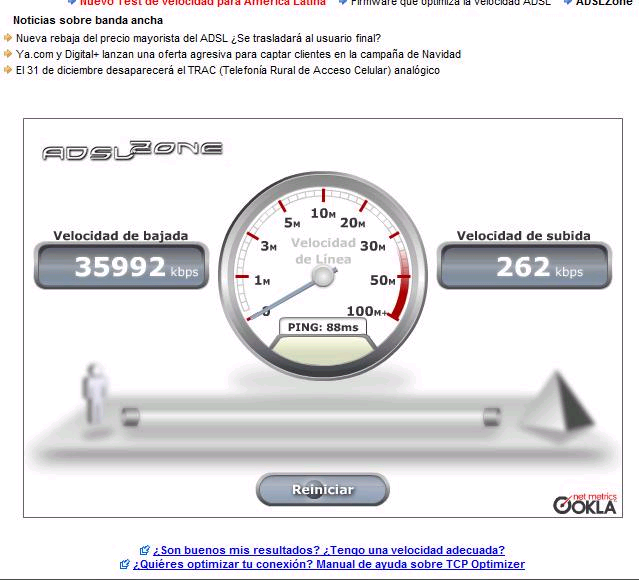

La url para hacer el test de velocidad, es WWW.TESTDEVELOCIDAD.ES
Entre un par de propagandas, directamente se van a encontrar con esto en pantalla:

Le dan a empezar, y despues de aproximadamente 2 minutos van a tener el resultado, con el siguiente formato:

En el margen Izquierdo tienen la velocidad en KBPS de bajada y en el margen derecho la velocidad de subida. En este caso, no se que proveedor tendra esta persona, pero utiliza una conexion de 35.9 Mb de bajada.